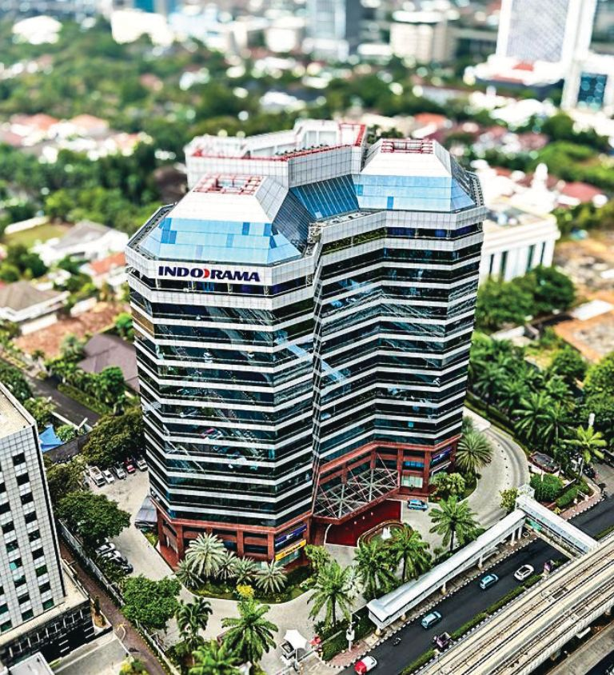

PT Indorama Synthetics adalah produsen industri tekstil terpadu yang berfokus pada produksi Draw Textured Yarn (DTY) dan produk poliester lainnya. Didirikan pada tahun 1975, perusahaan telah berkembang menjadi pemasok global dengan fasilitas modern dan jaringan distribusi internasional.
Lokasi fasilitas produksi kami dilengkapi mesin berteknologi tinggi dan sistem kontrol kualitas yang ketat untuk memastikan konsistensi dan performa produk. Kami melayani pasar domestik dan ekspor ke lebih dari 70 negara.
Lihat Produk
Didirikan oleh Sri Prakash Lohia, Indorama memulai operasi sebagai pabrik poliester dan secara bertahap mengembangkan lini produk termasuk DTY, PSF, PET Resin, dan lainnya. Perusahaan mengutamakan investasi pada R&D dan keberlanjutan.
Mencapai keunggulan global dalam solusi serat poliester yang berkelanjutan dan bernilai tambah.
Politeknik Engineering Indorama
Kembangkuning, Jatiluhur, Purwakarta
Jawa Barat, Indonesia
Email: info@indorama.co.id